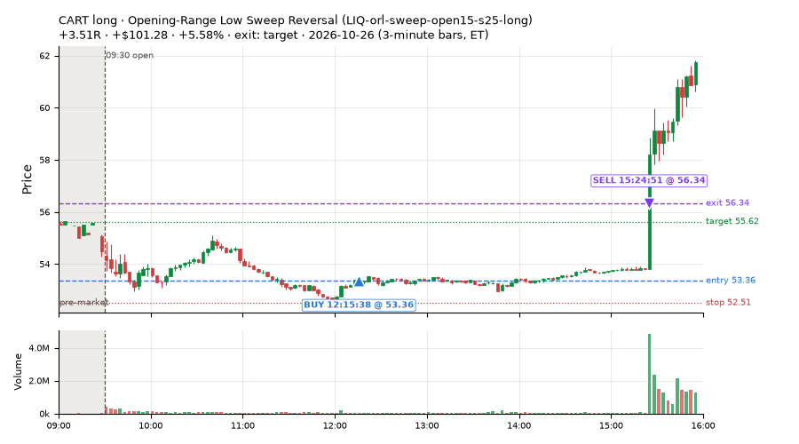
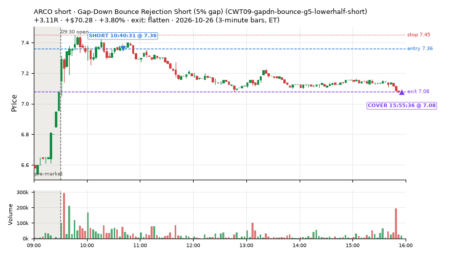
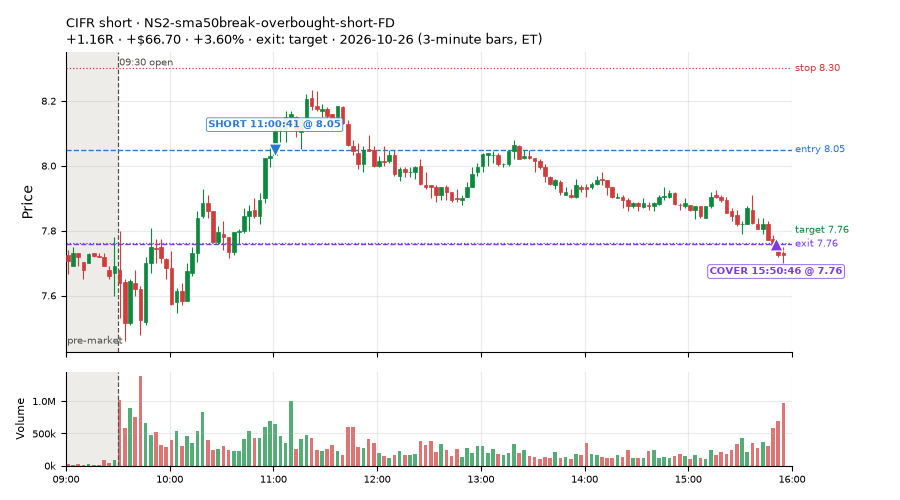
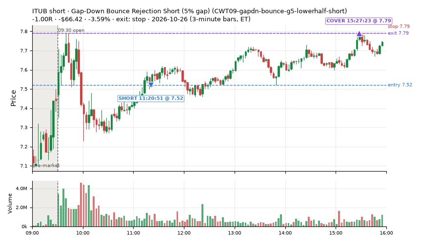
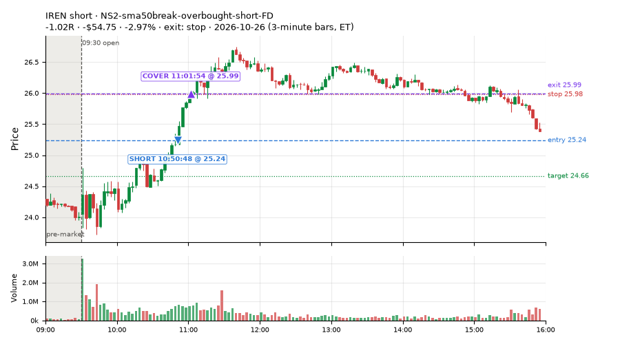
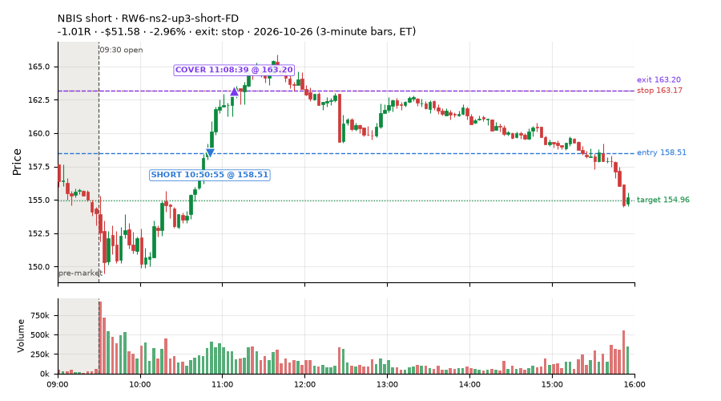
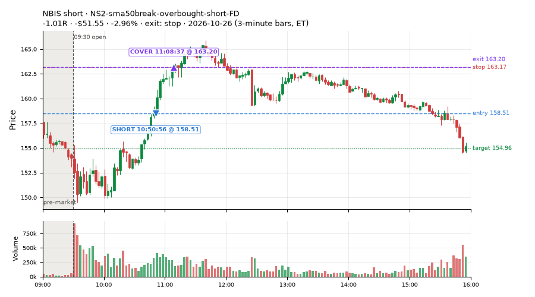

193 trades · win rate 52% · P/L $-345.42
PROBATION: no live setup has passed both locked test periods. 10 owner-directed setups added 2026-10-08 (MarcoFlow top 5 + 5 new), untested live. RW6G1 (RW6 + VWAP band guard) added 2026-10-09, probation.

| Symbol | Setup | Side | In | Out | Entry | Exit | Exit reason | % gained | P/L |
|---|---|---|---|---|---|---|---|---|---|
| CART | Opening-Range Low Sweep Reversal (LIQ-orl-sweep-open15-s25-long) | long | 12:15 | 15:24 | 53.36 | 56.34 | target | +5.58% | $101.28 |
| ARCO | Gap-Down Bounce Rejection Short (5% gap) (CWT09-gapdn-bounce-g5-lowerhalf-short) | short | 10:40 | 15:55 | 7.36 | 7.08 | flatten | +3.80% | $70.28 |
| CIFR | NS2-sma50break-overbought-short-FD | short | 11:00 | 15:50 | 8.05 | 7.76 | target | +3.60% | $66.70 |
| Symbol | Setup | Side | In | Out | Entry | Exit | Exit reason | % lost | P/L |
|---|---|---|---|---|---|---|---|---|---|
| ITUB | CWT09-gapdn-bounce-g5-lowerhalf-short | short | 11:20 | 15:27 | 7.52 | 7.79 | stop | -3.59% | $-66.42 |
| PBR | CWT09-gapdn-bounce-g5-lowerhalf-short | short | 11:21 | 13:54 | 21.76 | 22.43 | stop | -3.08% | $-56.95 |
| IREN | NS2-sma50break-overbought-short-FD | short | 10:50 | 11:01 | 25.24 | 25.99 | stop | -2.97% | $-54.75 |
| NBIS | RW6-ns2-up3-short-FD | short | 10:50 | 11:08 | 158.51 | 163.20 | stop | -2.96% | $-51.58 |
| NBIS | NS2-sma50break-overbought-short-FD | short | 10:50 | 11:08 | 158.51 | 163.20 | stop | -2.96% | $-51.55 |







Signal to fill: median 1s, 90th percentile 3s (192 trades). Bars close each minute; the order follows the bar close.
Best excursion (MFE): median 0.37R; worst (MAE) median 0.72R. 33% of trades never got +0.25R in our favour; 1 reached +1R and still closed at or below 0.
| Symbol | Setup | Best R | Worst R | Closed R |
|---|---|---|---|---|
| KDP | MF1-945-flowsell-vwapup-FD | +1.32 | -2.40 | -0.96 |
| FICO | heat_fade_short-FD | +0.83 | -1.17 | -1.17 |
| VRTX | heat_fade_short-FD | +0.61 | -1.25 | -1.39 |
| XLE | MF1-945-flowsell-vwapup-FD | +0.98 | -1.03 | -1.01 |
| MRNA | CWT09-gapdn-vwaploss-g5-short | +0.73 | -1.08 | -1.03 |
| Entry time | Trades | Win | Avg R | P/L |
|---|---|---|---|---|
| 10:30-11:30 | 121 | 53% | -0.09 | $-427.50 |
| 11:30-13:00 | 49 | 47% | -0.06 | $112.24 |
| 13:00-14:00 | 15 | 73% | +0.22 | $58.64 |
| 14:00-16:00 | 8 | 38% | -0.46 | $-88.80 |
| Setup | Trades | Win | Avg R | Adj R (net of SPY) | P/L |
|---|---|---|---|---|---|
| Gap-Down Bounce Rejection Short (5% gap) (CWT09-gapdn-bounce-g5-lowerhalf-short) | 8.0 | 12% | -0.36 | -0.41 | $-175.75 |
| Gap-Down VWAP Loss Short (5% gap) (CWT09-gapdn-vwaploss-g5-short) | 1.0 | 0% | -1.03 | -0.92 | $-31.41 |
| Stretched Above VWAP Fade (CWT13-vwapstretch-z05-short) | 12.0 | 83% | +0.46 | +0.15 | $106.91 |
| Failed Opening-Range-Low Break Long (0.05 ATR) [fill] (CWT14-failbrk-orl-p05-long) | 28.0 | 46% | -0.17 | -0.10 | $-49.53 |
| Failed Opening-Range-Low Break Long (0.05 ATR, low volume) [fill] (CWT14-failbrk-orl-p05-lowvol-long) | 31.0 | 52% | -0.11 | -0.02 | $11.88 |
| Failed Opening-Range-Low Break Long (0.1 ATR) [fill] (CWT14-failbrk-orl-p10-long) | 9.0 | 78% | +0.11 | +0.30 | $54.20 |
| Failed Opening-Range-Low Break Long (low volume) (CWT14-failbrk-orl-p10-lowvol-long) | 10.0 | 80% | +0.12 | +0.23 | $51.48 |
| Failed Prior-Day-High Break Short (0.05 ATR, low volume) [fill] (CWT14-failbrk-pdh-p05-lowvol-short) | 14.0 | 86% | +0.22 | +0.15 | $84.61 |
| Failed Prior-Day-High Break Short (low volume) (CWT14-failbrk-pdh-p10-lowvol-short) | 5.0 | 80% | +0.14 | +0.02 | $29.25 |
| Failed Prior-Day-High Break Short (0.1 ATR) [fill] (CWT14-failbrk-pdh-p10-short) | 2.0 | 100% | +0.45 | +0.23 | $13.83 |
| Opening-Range Low Sweep Reversal (LIQ-orl-sweep-open15-s25-long) | 3.0 | 33% | +0.74 | +0.80 | $71.04 |
| MF1-945-flowsell-vwapup-FD | 4.0 | 50% | +0.47 | -0.09 | $50.47 |
| Big Gainer Average Reclaim Fade (NS2-sma50break-overbought-short) owner-directed; holdouts once: Sep-Oct -0.115R n76, Apr-Jun +0.021R n587 | 2.0 | 100% | +0.75 | +0.62 | $54.43 |
| NS2-sma50break-overbought-short-FD | 6.0 | 50% | -0.07 | -0.12 | $-23.72 |
| RW2-exhaustion-noon-adv150-short-FD | 28.0 | 36% | -0.32 | -0.50 | $-385.66 |
| RW6-ns2-up3-short-FD | 5.0 | 40% | -0.15 | -0.18 | $-35.52 |
| ST2-slope20up-long-am-t05s1-FD | 2.0 | 0% | -0.70 | -0.71 | $-55.88 |
| Midday Gap-Up Dip Buy (heat_fade_long) failed Apr-Jun holdout: -0.138R/trade over 1043 trades | 5.0 | 20% | -0.65 | -0.46 | $-67.10 |
| heat_fade_long-FD | 2.0 | 0% | -1.03 | -0.77 | $-30.24 |
| heat_fade_short-FD | 16.0 | 44% | -0.25 | -0.34 | $-18.71 |
Market direction (SPY, beta 1) accounted for $115.10 of today's $-345.42; the rest ($-460.52) came from the setups themselves. Avg R net of SPY: -0.11 (incl. a hedge leg's cost; report only).
22 setups live today. Today: 313 signals, 193 taken, 25 lost because another setup held the symbol (8%). Since 2026-10-21 (4 sessions): 2321 signals, 1095 taken, 134 lost to other setups (6%). Peak open positions today 108 of 200 slots. Earnings blackout removed 1024 symbols before scanning.
Simulated playing time (not live): 1223 what-if trades of signals not taken, avg -0.01R, 60% winners; of them 134 lost to another setup (avg -0.21R).
Crowded out: NS2-sma50break-overbought-short · Starved: ST1-ordn-long-pm-t05s1-FD, MF1-945-flowsell-vwapup-FD, heat_fade_long, heat_fade_long-FD, heat_fade_short, heat_fade_short-FD
| Prio | Setup | Today sig / taken | Sessions | Signals / taken / trades | Taken/day | Expected/day | Lost to other setups | Lost to (setup n) | Top skip reasons | SIMULATED: not-taken n / avg R / win | Verdict |
|---|---|---|---|---|---|---|---|---|---|---|---|
| 1 | ST1-ordn-long-pm-t05s1-FD ST1-ordn-long-pm-t05s1-FD | 0 / 0 | 4 | 5 / 3 / 3 | 0.75 | 3.49 | 0 | – | spread / quote / size 1, broker rejected 1 | 2 / -0.20R / 50% | starved 0.75 entries/day vs ~3.49 expected |
| 2 | RW6-ns2-up3-short-FD RW6-ns2-up3-short-FD | 16 / 5 | 4 | 29 / 13 / 13 | 3.25 | 7.12 | 0 | – | daily loss cap 9, not shortable / shorts off 5, spread / quote / size 2 | 16 / +0.43R / 81% | ok 16.2 entries/week |
| 3 | NS2-sma50break-overbought-short-FD NS2-sma50break-overbought-short-FD | 21 / 6 | 4 | 52 / 23 / 23 | 5.75 | 17.08 | 0 | – | daily loss cap 19, not shortable / shorts off 7, spread / quote / size 3 | 29 / +0.44R / 76% | ok 28.8 entries/week |
| 4 | Big Gainer Average Reclaim Fade NS2-sma50break-overbought-short | 9 / 2 | 4 | 29 / 6 / 6 | 1.50 | 5.74 | 17 | NS2-sma50break-overbought-short-FD 17, RW6-ns2-up3-short-FD 6 | symbol held by another setup 17, not shortable / shorts off 3, spread / quote / size 3 | 23 / -0.03R / 52% | crowded-out 17 of 29 signals (59%) lost to setups already holding the symbol |
| 5 | MF1-945-flowsell-vwapup-FD MF1-945-flowsell-vwapup-FD | 4 / 4 | 4 | 34 / 19 / 19 | 4.75 | 23.94 | 0 | – | spread / quote / size 12, not shortable / shorts off 3 | 15 / -0.25R / 33% | starved 4.75 entries/day vs ~23.94 expected |
| 6 | ST2-slope20up-long-am-t05s1-FD ST2-slope20up-long-am-t05s1-FD | 5 / 2 | 4 | 52 / 38 / 38 | 9.50 | 24.03 | 8 | heat_fade_short-FD 7, heat_fade_short 1 | symbol held by another setup 8, spread / quote / size 6 | 14 / -0.25R / 43% | ok 47.5 entries/week |
| 7 | Midday Gap-Up Dip Buy heat_fade_long | 8 / 5 | 4 | 17 / 11 / 11 | 2.75 | 30.36 | 3 | heat_fade_long-FD 3 | symbol held by another setup 3, spread / quote / size 3 | 6 / +0.20R / 67% | starved 2.75 entries/day vs ~30.36 expected |
| 8 | Opening-Range Low Sweep Reversal LIQ-orl-sweep-open15-s25-long | 5 / 3 | 4 | 83 / 63 / 63 | 15.75 | – | 6 | CWT14-failbrk-orl-p10-long 6, CWT14-failbrk-orl-p05-lowvol-long 6, CWT14-failbrk-orl-p10-lowvol-long 4 | symbol held by another setup 6, per-setup cap 6, spread / quote / size 6 | 20 / -0.08R / 50% | ok 78.8 entries/week |
| 9 | RW2-exhaustion-noon-adv150-short-FD RW2-exhaustion-noon-adv150-short-FD | 44 / 28 | 4 | 168 / 74 / 74 | 18.50 | 50.34 | 1 | CWT14-failbrk-orl-p10-lowvol-long 1, CWT14-failbrk-orl-p10-long 1 | daily loss cap 56, not shortable / shorts off 24, spread / quote / size 11 | 94 / -0.09R / 51% | ok 92.5 entries/week |
| 10 | heat_fade_long-FD heat_fade_long-FD | 9 / 2 | 4 | 35 / 13 / 13 | 3.25 | 51.74 | 8 | heat_fade_long 8, ST1-ordn-long-pm-t05s1-FD 1 | symbol held by another setup 8, spread / quote / size 8, daily loss cap 6 | 22 / +0.30R / 68% | starved 3.25 entries/day vs ~51.74 expected |
| 11 | Failed Opening-Range-Low Break Long (low volume) CWT14-failbrk-orl-p10-lowvol-long | 13 / 10 | 4 | 165 / 96 / 96 | 24.00 | – | 2 | CWT14-failbrk-orl-p10-long 1, CWT14-failbrk-orl-p05-long 1, LIQ-orl-sweep-open15-s25-long 1 | daily loss cap 35, per-setup cap 16, spread / quote / size 15 | 68 / +0.01R / 68% | ok 120.0 entries/week |
| 12 | Failed Opening-Range-Low Break Long (0.1 ATR) [fill] CWT14-failbrk-orl-p10-long | 10 / 9 | 4 | 208 / 112 / 112 | 28.00 | – | 2 | CWT14-failbrk-orl-p05-lowvol-long 1, CWT14-failbrk-orl-p05-long 1, CWT14-failbrk-orl-p10-lowvol-long 1 | daily loss cap 46, per-setup cap 31, spread / quote / size 15 | 95 / -0.06R / 64% | ok 140.0 entries/week |
| 13 | Morning Bounce Fade heat_fade_short | 0 / 0 | 4 | 55 / 31 / 31 | 7.75 | 31.76 | 0 | – | spread / quote / size 22, not shortable / shorts off 2 | 24 / -0.13R / 38% | starved 7.75 entries/day vs ~31.76 expected |
| 14 | Failed Opening-Range-Low Break Long (0.05 ATR, low volume) [fill] CWT14-failbrk-orl-p05-lowvol-long | 39 / 31 | 4 | 356 / 151 / 151 | 37.75 | – | 1 | CWT14-failbrk-orl-p10-lowvol-long 1, CWT14-failbrk-orl-p10-long 1, CWT14-failbrk-orl-p05-long 1 | daily loss cap 134, per-setup cap 54, spread / quote / size 16 | 204 / -0.08R / 65% | ok 188.8 entries/week |
| 15 | heat_fade_short-FD heat_fade_short-FD | 23 / 16 | 4 | 272 / 108 / 108 | 27.00 | 173.78 | 47 | heat_fade_short 31, LIQ-orl-sweep-open15-s25-long 7, CWT14-failbrk-orl-p05-long 5 | daily loss cap 51, symbol held by another setup 47, spread / quote / size 38 | 164 / +0.10R / 52% | starved 27.00 entries/day vs ~173.78 expected |
| 16 | Failed Opening-Range-Low Break Long (0.05 ATR) [fill] CWT14-failbrk-orl-p05-long | 42 / 28 | 4 | 471 / 200 / 200 | 50.00 | – | 37 | CWT14-failbrk-orl-p10-lowvol-long 29, CWT14-failbrk-orl-p10-long 29, CWT14-failbrk-orl-p05-lowvol-long 29 | daily loss cap 108, per-setup cap 85, spread / quote / size 41 | 271 / -0.08R / 64% | ok 250.0 entries/week |
| 17 | Gap-Down Bounce Rejection Short (5% gap) CWT09-gapdn-bounce-g5-lowerhalf-short | 13 / 8 | 4 | 75 / 20 / 20 | 5.00 | – | 0 | – | not shortable / shorts off 40, daily loss cap 12, spread / quote / size 3 | 55 / +0.35R / 67% | ok 25.0 entries/week |
| 18 | Failed Prior-Day-High Break Short (0.05 ATR, low volume) [fill] CWT14-failbrk-pdh-p05-lowvol-short | 19 / 14 | 3 | 103 / 38 / 38 | 12.67 | – | 1 | CWT14-failbrk-orl-p10-lowvol-long 1, CWT14-failbrk-orl-p10-long 1 | daily loss cap 42, spread / quote / size 15, not shortable / shorts off 6 | 65 / -0.14R / 60% | ok 63.3 entries/week |
| 19 | Failed Prior-Day-High Break Short (low volume) CWT14-failbrk-pdh-p10-lowvol-short | 6 / 5 | 3 | 46 / 31 / 31 | 10.33 | – | 0 | – | spread / quote / size 12, daily loss cap 2, not shortable / shorts off 1 | 15 / -0.20R / 60% | ok 51.7 entries/week |
| 20 | Failed Prior-Day-High Break Short (0.1 ATR) [fill] CWT14-failbrk-pdh-p10-short | 5 / 2 | 2 | 30 / 20 / 20 | 10.00 | – | 1 | CWT13-vwapstretch-z05-short 1, CWT14-failbrk-pdh-p05-lowvol-short 1, CWT14-failbrk-pdh-p10-lowvol-short 1 | spread / quote / size 6, not shortable / shorts off 3, symbol held by another setup 1 | 10 / +0.18R / 80% | ok 50.0 entries/week |
| 21 | Stretched Above VWAP Fade CWT13-vwapstretch-z05-short | 16 / 12 | 2 | 30 / 24 / 24 | 12.00 | – | 0 | – | not shortable / shorts off 3, spread / quote / size 3 | 6 / -0.33R / 33% | ok 60.0 entries/week |
| 22 | Gap-Down VWAP Loss Short (5% gap) CWT09-gapdn-vwaploss-g5-short | 6 / 1 | 1 | 6 / 1 / 1 | 1.00 | – | 0 | – | not shortable / shorts off 3, spread / quote / size 2 | 5 / -0.06R / 40% | slow 5.0 entries/week; ~12 weeks to 60 trades |
Every trade is attached as a CSV you can open and edit in Excel or Google Sheets. Live page: https://misiti15.github.io/MCF/live/